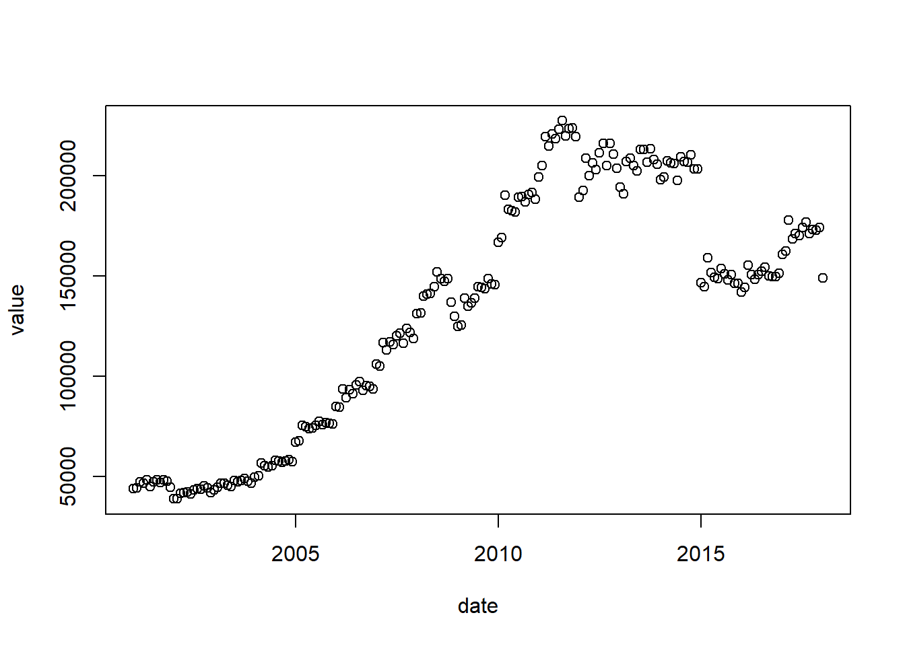

5 Aula 5
O pacote BETS (sigla para Brazilian Economic Time Series) para o R fornece, de maneira descomplicada, as mais relevantes séries temporais econômicas do Brasil (séries temporais da FGV, IBGE e Banco Central) e diversas ferramentas para analisá-las. O BETS preenche uma lacuna no processo de obtenção de dados no Brasil, na medida em que unifica os pontos de acesso às séries e oferece uma interface bastante simples, flexível e robusta.
install.packages("BETS") #instalando o pacotelibrary(BETS) #Carregando o pacote#codigo para importação dos dados
BETSget(code, from = "", to = "", data.frame = FALSE, frequency = NULL)Este é o codigo que usaremos para importar nossos dados. Como não sabemos o que colocar no primeiro argumento (code) usaremos outro cÓdigo primeiro.
É atraves do BETS.addin_pt que descobriremos qual o code da nossa série.
BETS.addin_pt() #BETS searchDigamos que tenhamos interesse em utilizar o Pib Mensal e seu cÓdigo seja 4385.
pib_mensal <- BETSget(code="4385", from = "2001-01-01", to = "2018-01-01")## Warning:
## BETS-package: There is no corresponding entry in the metadata table.
##
## Don't worry, this is not a critical problem. We are working on a solution.pib_mensal #Visulaizando os dados importados## date value
## 1 2001-01-01 44006
## 2 2001-02-01 44227
## 3 2001-03-01 47483
## 4 2001-04-01 46705
## 5 2001-05-01 48304
## 6 2001-06-01 45024
## 7 2001-07-01 47259
## 8 2001-08-01 48406
## 9 2001-09-01 47122
## 10 2001-10-01 48468
## 11 2001-11-01 47790
## 12 2001-12-01 44767
## 13 2002-01-01 38931
## 14 2002-02-01 38954
## 15 2002-03-01 41824
## 16 2002-04-01 42076
## 17 2002-05-01 42426
## 18 2002-06-01 41359
## 19 2002-07-01 43213
## 20 2002-08-01 44146
## 21 2002-09-01 43665
## 22 2002-10-01 45256
## 23 2002-11-01 44313
## 24 2002-12-01 41939
## 25 2003-01-01 43244
## 26 2003-02-01 44620
## 27 2003-03-01 46840
## 28 2003-04-01 46777
## 29 2003-05-01 45837
## 30 2003-06-01 45100
## 31 2003-07-01 47895
## 32 2003-08-01 47366
## 33 2003-09-01 48175
## 34 2003-10-01 49126
## 35 2003-11-01 47697
## 36 2003-12-01 46789
## 37 2004-01-01 49802
## 38 2004-02-01 50345
## 39 2004-03-01 56809
## 40 2004-04-01 55324
## 41 2004-05-01 54872
## 42 2004-06-01 55580
## 43 2004-07-01 58082
## 44 2004-08-01 57685
## 45 2004-09-01 57115
## 46 2004-10-01 57839
## 47 2004-11-01 58485
## 48 2004-12-01 57402
## 49 2005-01-01 67201
## 50 2005-02-01 67794
## 51 2005-03-01 75512
## 52 2005-04-01 74766
## 53 2005-05-01 73737
## 54 2005-06-01 74201
## 55 2005-07-01 75713
## 56 2005-08-01 77525
## 57 2005-09-01 75726
## 58 2005-10-01 76803
## 59 2005-11-01 76692
## 60 2005-12-01 76363
## 61 2006-01-01 85112
## 62 2006-02-01 84566
## 63 2006-03-01 93564
## 64 2006-04-01 89327
## 65 2006-05-01 93238
## 66 2006-06-01 91244
## 67 2006-07-01 95620
## 68 2006-08-01 97371
## 69 2006-09-01 93011
## 70 2006-10-01 95477
## 71 2006-11-01 94996
## 72 2006-12-01 93605
## 73 2007-01-01 106106
## 74 2007-02-01 105163
## 75 2007-03-01 116698
## 76 2007-04-01 113217
## 77 2007-05-01 117097
## 78 2007-06-01 115928
## 79 2007-07-01 120301
## 80 2007-08-01 121468
## 81 2007-09-01 116491
## 82 2007-10-01 123912
## 83 2007-11-01 121705
## 84 2007-12-01 118712
## 85 2008-01-01 131280
## 86 2008-02-01 131651
## 87 2008-03-01 139795
## 88 2008-04-01 140953
## 89 2008-05-01 141174
## 90 2008-06-01 144501
## 91 2008-07-01 151930
## 92 2008-08-01 148748
## 93 2008-09-01 147463
## 94 2008-10-01 148780
## 95 2008-11-01 137099
## 96 2008-12-01 129771
## 97 2009-01-01 124896
## 98 2009-02-01 125416
## 99 2009-03-01 138934
## 100 2009-04-01 134806
## 101 2009-05-01 136452
## 102 2009-06-01 138912
## 103 2009-07-01 144626
## 104 2009-08-01 144293
## 105 2009-09-01 143587
## 106 2009-10-01 148839
## 107 2009-11-01 146113
## 108 2009-12-01 145750
## 109 2010-01-01 166863
## 110 2010-02-01 169089
## 111 2010-03-01 190127
## 112 2010-04-01 183173
## 113 2010-05-01 182609
## 114 2010-06-01 181958
## 115 2010-07-01 189333
## 116 2010-08-01 189489
## 117 2010-09-01 186993
## 118 2010-10-01 190513
## 119 2010-11-01 191475
## 120 2010-12-01 188129
## 121 2011-01-01 199170
## 122 2011-02-01 205112
## 123 2011-03-01 219420
## 124 2011-04-01 214817
## 125 2011-05-01 220646
## 126 2011-06-01 218366
## 127 2011-07-01 223091
## 128 2011-08-01 227371
## 129 2011-09-01 219817
## 130 2011-10-01 223477
## 131 2011-11-01 223653
## 132 2011-12-01 219543
## 133 2012-01-01 189399
## 134 2012-02-01 192665
## 135 2012-03-01 208759
## 136 2012-04-01 200056
## 137 2012-05-01 206366
## 138 2012-06-01 202944
## 139 2012-07-01 211392
## 140 2012-08-01 216153
## 141 2012-09-01 205145
## 142 2012-10-01 216196
## 143 2012-11-01 210632
## 144 2012-12-01 203842
## 145 2013-01-01 194234
## 146 2013-02-01 190831
## 147 2013-03-01 206887
## 148 2013-04-01 208797
## 149 2013-05-01 205035
## 150 2013-06-01 202504
## 151 2013-07-01 212977
## 152 2013-08-01 213036
## 153 2013-09-01 206743
## 154 2013-10-01 213500
## 155 2013-11-01 208107
## 156 2013-12-01 205805
## 157 2014-01-01 198133
## 158 2014-02-01 199405
## 159 2014-03-01 207428
## 160 2014-04-01 206417
## 161 2014-05-01 206000
## 162 2014-06-01 197503
## 163 2014-07-01 209286
## 164 2014-08-01 207039
## 165 2014-09-01 206841
## 166 2014-10-01 210265
## 167 2014-11-01 203204
## 168 2014-12-01 203325
## 169 2015-01-01 146766
## 170 2015-02-01 144662
## 171 2015-03-01 159069
## 172 2015-04-01 151611
## 173 2015-05-01 149378
## 174 2015-06-01 148622
## 175 2015-07-01 153678
## 176 2015-08-01 151054
## 177 2015-09-01 148001
## 178 2015-10-01 150692
## 179 2015-11-01 146248
## 180 2015-12-01 146387
## 181 2016-01-01 141906
## 182 2016-02-01 144418
## 183 2016-03-01 155483
## 184 2016-04-01 150646
## 185 2016-05-01 148389
## 186 2016-06-01 150857
## 187 2016-07-01 152283
## 188 2016-08-01 154356
## 189 2016-09-01 150170
## 190 2016-10-01 149841
## 191 2016-11-01 149850
## 192 2016-12-01 151325
## 193 2017-01-01 160908
## 194 2017-02-01 162480
## 195 2017-03-01 177944
## 196 2017-04-01 168396
## 197 2017-05-01 171267
## 198 2017-06-01 170162
## 199 2017-07-01 174042
## 200 2017-08-01 176821
## 201 2017-09-01 171161
## 202 2017-10-01 173184
## 203 2017-11-01 172749
## 204 2017-12-01 174158
## 205 2018-01-01 148986plot(pib_mensal) #Plotando os dados importados
R Core Team (2018). R: A language and environment for statistical computing. R Foundation for Statistical Computing, Vienna, Austria. URL https://www.R-project.org/.
Pedro Costa Ferreira, Talitha Speranza and Jonatha Costa (2018). BETS: Brazilian Economic Time Series. R package version 0.4.9. https://CRAN.R-project.org/package=BETS